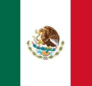

Weltwunder der Antike
Die Liste umfasst sieben Weltwunder, weil die Zahl Sieben in der Antike als „vollkommen“ galt. Diese festgelegte Zahl sollte die Bauwerke in ihrer Bedeutung erhöhen.
Heute existieren von diesen Weltwundern nur noch die Pyramiden von Gizeh. Die anderen wurden durch Erdbeben, Kriege oder Vandalismus zerstört oder zerfielen im Laufe der Zeit. Die ursprünglich aufgelisteten Stadtmauern von Babylon wurden z. B. schon von Antipatros aus der Liste entfernt, da sie zerstört waren, und durch den Leuchtturm von Alexandria ersetzt. In späteren Listen waren die Mauern von Babylon aber teilweise noch verzeichnet. Erst Gregor von Tours strich sie im 6. Jahrhundert endgültig aus der Liste.
Antike Darstellungen der Weltwunder gibt es recht wenige, jedoch wurden einige Münzprägungen mit dem Helioskopf (der Koloss von Rhodos war eine Statue des Sonnengottes Helios), mit der Zeusstatue im Profil oder mit dem Leuchtturm von Alexandria gefunden. Beschreibungen des Mausoleums liegen vor. In der Renaissancezeit fertigten Künstler wie der Niederländer Maerten van Heemskerck und im Barock der österreichische Architekt Johann Bernhard Fischer von Erlach Darstellungen der Wunder nach ihren Vorstellungen an.
Weltwunder der Neuzeit
Ein größeres Medienecho erreichte Mitte der 2000er Jahre die 1998 von dem Schweizer Bernard Weber gegründete Stiftung „NewOpenWorld Foundation“ mit der Wahl der sogenannten „New 7 Wonders of the World“. Ziel war laut Weber, Menschen aus aller Welt durch ihr gemeinsames kulturelles Erbe zu verbinden. Die Wahl erfolgte in einer Kombination aus Online-Wahl und Juryentscheidung in drei Phasen.
In der ersten Phase standen 200 Bauwerke zur Auswahl, über die, nach Angabe der Veranstalter, ca. 20 Millionen Internetnutzer abstimmten. Aus den 77 Bestplatzierten wurden in der zweiten Phase von einer Jury, bestehend aus sieben Architekten (unter anderem Zaha Hadid, Tadao Andō, César Pelli und Harry Seidler) unter dem Vorsitz des ehemaligen UNESCO-Generaldirektors Federico Mayor Zaragoza, 21 Finalisten ausgewählt.
Protest kam aus Ägypten: Kulturminister Farouk Hosny und der Generalsekretär der ägyptischen Altertümerverwaltung Zahi Hawass stellten fest, dass die Wahl keinerlei wissenschaftlichen oder offiziellen Hintergrund habe, und bezeichneten sie als „Unfug“. Daraufhin wurden die Pyramiden von Gizeh aus der Liste genommen und als „ewiges Weltwunder“ deklariert. In der dritten Phase von Januar 2006 bis Juni 2007 konnte per Internet, Telefon oder SMS abgestimmt werden. Laut Veranstalter wurden insgesamt 100 Millionen Stimmen abgegeben. Schloss Neuschwanstein verpasste den Einzug in die Liste nur knapp und wurde auf Platz 8 gewählt.Die sieben Weltwunder der Antike
 Die Pyramiden von Gizeh
Die Pyramiden von Gizeh 
Die Pyramiden von Gizeh bestehen aus drei Pyramiden: der Cheops-Pyramide, der Pyramide des Chefren (Sohn vom Pharao Cheops) und der Pyramide des Mykerinos (Enkel vom Pharao Cheops). Sie gelten als einziger noch erhaltener Teil der Sieben Weltwunder der Antike und stehen in der Nähe von Kairo..
 Die Zeusstatue von Phidias
Die Zeusstatue von Phidias
Die Zeus-Statue des Phidias war die sitzende Kolossalstatue des Zeus für den im Jahre 456 v. Chr. fertiggestellten Zeustempel von Olympia. Das Sitzbild wurde von dem Bildhauer Phidias zwischen 438 und 430 v. Chr. geschaffen und gehörte nicht nur wegen seiner Höhe von etwa 13 Metern zu den „Sieben Weltwundern der Antike“. Die Statue war aus Gold und Elfenbein über einem hölzernen Gerüst gefertigt. Der Thron bestand aus Ebenholz. Zeus hielt in seiner Rechten Nike, in seiner Linken einen Stab. Basis und Thron waren darüber hinaus mit freiplastischen Figuren und Reliefs reich geschmückt, bemalte Schranken hielten den Besucher auf Abstand.
Während Fundamentreste der Statuenbasis in Olympia erhalten sind, ist die Statue selbst verloren und nur noch aus Münzdarstellungen und antiken Beschreibungen zu rekonstruieren. Einer Legende des 12. Jahrhunderts zufolge befand sich die Statue im 5. Jahrhundert n. Chr. in Konstantinopel, wo sie im Jahr 475 einem Brand zum Opfer fiel.

 Artemis Tempel
Artemis Tempel
Der Artemis-Tempel von Ephesos war eines der sieben Weltwunder. Ephesos war eine griechisch geprägte Stadt an der Westküste der heutigen Türkei. Die Küstenlinie hat sich verschoben, heute liegen die Ruinen einige Kilometer vom Meer entfernt. Die Stadt war in der Antike berühmt für ihren Tempel der Göttin Artemis.

Die heutige Ruine des Tempels von Artemis
Das Grabmal von Mausolos
Das Mausoleum von Halikarnassos oder kurz Maussolleion war das prachtvolle Grabmal des Maussolos, eines Kleinkönigs von Karien und persischen Satrapen (377–353 v. Chr.), gelegen in der antiken griechischen Stadt Halikarnassos (heute Bodrum) an der Südwestküste der heutigen Türkei. Das Mausoleum gehörte zu den „Sieben Weltwundern der Antike“. Es wurde von zwei griechischen Architekten und vier griechischen Bildhauern gebaut.
 Die hängenden Gärten von Babylon
Die hängenden Gärten von Babylon
Die Hängenden Gärten der Semiramis, auch die Hängenden Gärten von Babylon genannt, waren nach den Berichten griechischer Autoren eine aufwändige Gartenanlage in Babylon am Euphrat (im Zweistromland, im heutigen Irak gelegen). Sie zählten zu den sieben Weltwundern der Antike. Die griechische Sagengestalt der Semiramis wird manchmal mit der assyrischen Königin Schammuramat gleichgesetzt.
Der Koloss von Rhodos
Der Koloss von Rhodos war eine über 30 Meter hohe, monumentale Bronze-Statue des Sonnen- und Stadtgottes Helios (altgriechisch Ἥλιος), die etwa 292 v. Chr. nach zwölfjähriger Bauzeit vollendet und in der Inselhauptstadt Rhodos aufgestellt wurde. Die Kolossalstatue stürzte etwa 227/226 v. Chr. infolge eines Erdbebens um. Sie zählte bereits in der Antike zu den sieben Weltwundern.

Der Leuchtturm von Pharos
Der Leuchtturm von Alexandria war der erste historisch überlieferte Leuchtturm und bis ins 20. Jahrhundert mit etwa 115 bis 160 Metern der höchste Leuchtturm, der je gebaut wurde. Nach der kleinen Insel Pharos, bei der er stand, wird er seit der Antike auch Pharos von Alexandria genannt. Der Leuchtturm von Alexandria war das jüngste der sieben Weltwunder der Antike. Ursprünglich enthielt die Weltwunderliste die Stadtmauern von Babylon. Da sie in hellenistischer Zeit zerfallen waren, wurden sie in der Liste durch den Leuchtturm ersetzt.
Die sieben Weltwunder der Neuzeit
 Chichen Itza
Chichén Itzá, die Ruinenstätte des Mayareiches, befindet sich auf der Halbinsel Yucatán in Mexiko. Heute ist es ein zentraler Platz für Millionen von Tourist:innen, zwischen dem 8. und 11. Jahrhundert war es der Angel- und Knotenpunkt des Mayaimperiums. Politische Entscheidungen wurden in Chichén Itzá getroffen und religiöse Veranstaltungen organisiert.
Chinesisch Mauer
Die Chinesische Mauer ist eine Schutzanlage zur Grenzsicherung, die während der Ming-Dynastie (1368–1644) im Norden Chinas errichtet wurde. Der chinesische Ausdruck ist 萬里長城 / 万里长城, Wànlǐ Chángchéng – „10.000-Li-Mauer, besser: zehntausende Li lange (Schutz-)Mauer“ oder kurz 長城 / 长城, Chángchéng, Jyutping Coeng4sing4anhören (kantonesisch)ⓘ/? – „Lange Mauer“, auch mit „Große Mauer“ (vgl. Englisch: „Great Wall“) übersetzt.
Die Anlage ist in Abschnitten zu unterschiedlichen Zeiten mit unterschiedlichen Bautechniken in der Ming-Dynastie gebaut worden. Breite, begehbare Mauern im Norden Pekings aus der zweiten Hälfte des 16. Jahrhunderts bilden das ikonische Bild der Chinesischen Mauer und sind zu einem Sinnbild Chinas geworden. In anderen Abschnitten, besonders im Westen, ist die Befestigung oftmals aus festgeklopftem Lehm erbaut worden. Die Länge der Schutzanlage wird mit 6260 Kilometern angegeben.
Christo Redentor
Hoch auf dem Corcovado-Hügel in Rio den Janeiro thront er, Cristo Redentor, auf Deutsch Christus, der Erlöser, mit seinen imposanten Maßen: 28 Meter beträgt die Armspannweite, die Statue ist 30 Meter hoch und 1.145 Tonnen schwer. Im Jahr 1931 wurde sie fertig gebaut. Nice to know: Auf dieses Bauwerk der sieben Weltwunder der Neuzeit führt eine Treppe bis in den Kopf der Statue, eine Gang für Inspektionen verläuft bis zu den Händen.

Das Kolosseum
Das Kolosseum ist das einzige der sieben neuen Weltwunder in Europa. In dem massiven Amphitheater in der Hauptstadt von Italien fanden die brutal-berüchtigten Gladiatoren- und Tierkämpfe statt. Manchmal wurde der Innenraum zum Teil mit Wasser geflutet, um Seeschlachten als Show auszutragen.
Machu Pichu
Die Ruinenstadt der Inkas liegt in den peruanischen Anden auf einer Höhe von 2.430 Metern. Astronomisch ausgerichtete Trockenmauern mit riesigen Steinblöcken prägen das Bild der Anlage. Machu Picchu sieht geheimnisvoll aus, wozu die Inkas die Anlage nutzten, ist bis heute nicht geklärt. Für Tourist:innen aus aller Welt wurde die Infrastruktur um den magischen Ort über dem Urubamba-Tal massiv ausgebaut, immer mehr Seilbahnen, immer mehr Aufzüge sollten her. Doch das geschah zu schnell – es kam zu Erdrutschen. Die UNESCO fordert deswegen die Regulierung der zugelassenen Touristenzahlen.
Felsenstadt Petra
Die über 2.000 Jahre alte Stadt Petra liegt im Südwesten von Jordanien bei der Schlucht Siq. Ehemals war sie die Hauptstadt des Königreichs der Nabatäer:innen – einem Verbund von nordwestafrikanischen Nomadenstämmen. Das Besondere: Die monumentalen Grabtempel sind in den rötlichen Sandstein von Felsen gehauen. Im Jahr 1985 wurde die antike Felsenstadt zudem zum Weltkulturerbe der UNESCO erklärt.
Das Taj Mahal
Der gigantische Taj Mahal befindet sich in Agra, einer Stadt im Norden von Indien. Es ist ein gigantisches mit weißem Marmor verkleidetes Mausoleum. Der Großmodul Shah ließ es im 17. Jahrhundert als Andenken an seine verstorbene Frau Mumtaz Mahal errichten.